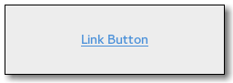

Gtk.LinkButton
Example
Methods
| Inherited: | Gtk.Button (29), Gtk.Bin (1), Gtk.Container (27), Gtk.Widget (256), GObject.Object (33), Gtk.Buildable (10), Gtk.Actionable (5), Gtk.Activatable (6) |
|---|
| static | new(uri) |
| static | new_with_label(uri, label) |
| get_uri() | |
| get_visited() | |
| set_uri(uri) | |
| set_visited(visited) |
Virtual Methods
| Inherited: | Gtk.Button (6), Gtk.Container (10), Gtk.Widget (82), GObject.Object (7), Gtk.Buildable (10), Gtk.Actionable (4), Gtk.Activatable (2) |
|---|
| do_activate_link() |
Properties
| Inherited: | Gtk.Button (10), Gtk.Container (3), Gtk.Widget (38), Gtk.Actionable (2), Gtk.Activatable (2) |
|---|
| Name | Type | Flags | Short Description |
|---|---|---|---|
| uri | str | r/w | The URI bound to this button |
| visited | bool | r/w | Whether this link has been visited. |
Style Properties
| Inherited: | Gtk.Button (7), Gtk.Widget (17) |
|---|
Signals
| Inherited: | Gtk.Button (6), Gtk.Container (4), Gtk.Widget (69), GObject.Object (1) |
|---|
| Name | Short Description |
|---|---|
| activate-link | The ::activate-link signal is emitted each time the Gtk.LinkButton has been clicked. |
Fields
| Inherited: | Gtk.Button (1), Gtk.Bin (1), Gtk.Container (1), Gtk.Widget (1), GObject.InitiallyUnowned (3), GObject.Object (3) |
|---|
| Name | Type | Access | Description |
|---|---|---|---|
| parent_instance | Gtk.Button | r |
Class Details
- class Gtk.LinkButton(uri, label=None, **kwds)
Bases: Gtk.Button
A Gtk.LinkButton is a Gtk.Button with a hyperlink, similar to the one used by web browsers, which triggers an action when clicked. It is useful to show quick links to resources.
A link button is created by calling either Gtk.LinkButton.new () or Gtk.LinkButton.new_with_label (). If using the former, the URI you pass to the constructor is used as a label for the widget.
The URI bound to a Gtk.LinkButton can be set specifically using Gtk.LinkButton.set_uri (), and retrieved using Gtk.LinkButton.get_uri ().
By default, Gtk.LinkButton calls Gtk.show_uri () when the button is clicked. This behaviour can be overridden by connecting to the Gtk.LinkButton ::activate-link signal and returning True from the signal handler.
- static new(uri)
Parameters: uri (str) – a valid URI Returns: a new link button widget. Return type: Gtk.Widget Creates a new Gtk.LinkButton with the URI as its text.
New in version 2.10.
- static new_with_label(uri, label)
Parameters: Returns: a new link button widget.
Return type: Creates a new Gtk.LinkButton containing a label.
New in version 2.10.
- get_uri()
Returns: a valid URI. The returned string is owned by the link button and should not be modified or freed. Return type: str Retrieves the URI set using Gtk.LinkButton.set_uri ().
New in version 2.10.
- get_visited()
Returns: True if the link has been visited, False otherwise Return type: bool Retrieves the “visited” state of the URI where the Gtk.LinkButton points. The button becomes visited when it is clicked. If the URI is changed on the button, the “visited” state is unset again.
The state may also be changed using Gtk.LinkButton.set_visited ().
New in version 2.14.
- set_uri(uri)
Parameters: uri (str) – a valid URI Sets uri as the URI where the Gtk.LinkButton points. As a side-effect this unsets the “visited” state of the button.
New in version 2.10.
- set_visited(visited)
Parameters: visited (bool) – the new “visited” state Sets the “visited” state of the URI where the Gtk.LinkButton points. See Gtk.LinkButton.get_visited () for more details.
New in version 2.14.
- do_activate_link()
Type: virtual Return type: bool
Signal Details
- Gtk.LinkButton.signals.activate_link(link_button)
Signal Name: activate-link Flags: RUN_LAST Parameters: link_button (Gtk.LinkButton) – The object which received the signal Return type: bool The ::activate-link signal is emitted each time the Gtk.LinkButton has been clicked.
The default handler will call Gtk.show_uri () with the URI stored inside the Gtk.LinkButton :uri property.
To override the default behavior, you can connect to the ::activate-link signal and stop the propagation of the signal by returning True from your handler.